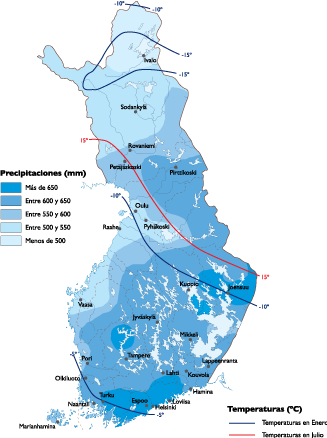

Geografija
Položaj
Državnu teritoriju preseca polarni krug, četvrtina njene teritorije je iznad severnog polarnika. Finska dopire blizu Severnog ledenog okeana na koji je imala izlaz pre Drugog svetskog rata. Državna teritorija se prostire od 60° do 70° severne geografske širine. Njena dužina u pravcu sever-jug prelazi 1100 km a njena prosečna širina je 600 km. Površina Finske je 338.145 km². Finska je severnoevropska, skandinavska i baltička zemlja.
Geologija i reljef
U grupi zemalja kojoj pripada skandinavskim zemljama, ona bi mogla da ponese atribut nizijska jer joj najviši vrh jedva prelazi 1.300 metara nadmorske visine. Za razliku od drugih skandinavskih zemalja, Finska je kontinentalna zemlja bez obzira što izlazi na Baltičko more. Po mnogim osobinama je sličnija Kareliji i poluostrvu Koli (teritorija Rusije), nego drugim skandinavskim zemljama.
Klima
Finskom vladaju okeanska i severna klima. Jedna od istaknutijih posledica položaja Finske na severnom kraju zemljine kugle je velika razlika između godišnjih doba. Klimu obeležavaju hladne zime i umereno topla leta. Prosečna godišnja temperatura u glavnom gradu Helsinkiju iznosi 5,3 stepena Celzijusa. Najviša dnevna temperatura u južnoj Finskoj leti se može popeti i do 30 stepeni. U zimskim mesecima, naročito u januaru i februaru temperature od -20 °C nisu neuobičajne. Na udaljenom severnom delu, iznad arktičkog pojasa, sunce ne zalazi oko 73 dana, stvarajući na taj način bele letne noći. U istom tom delu, u zimskim mesecima, sunce se ne diže iznad horizonta 51 dan, što stvara polarnu noć, kaamos na finskom.
